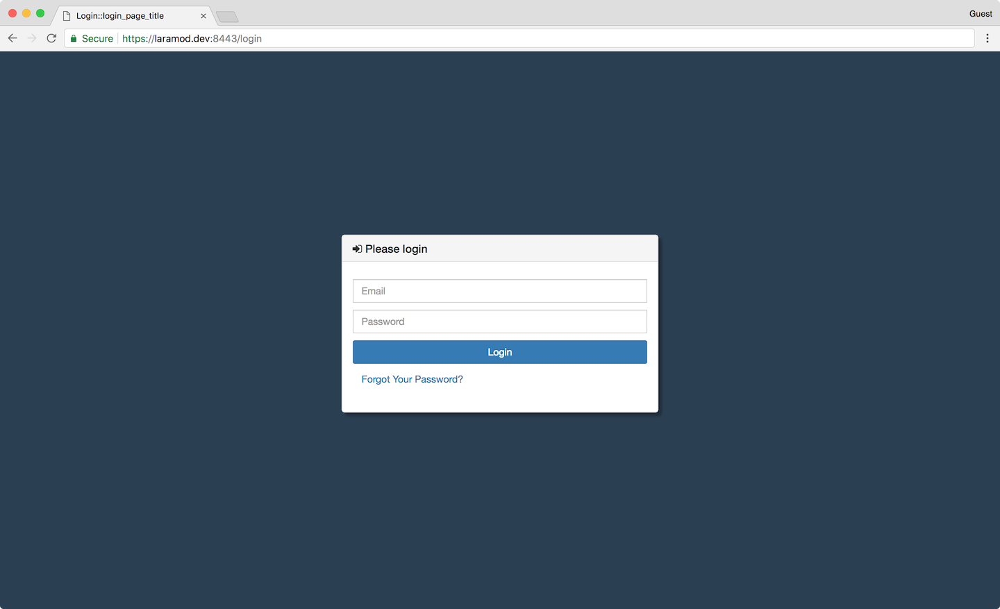
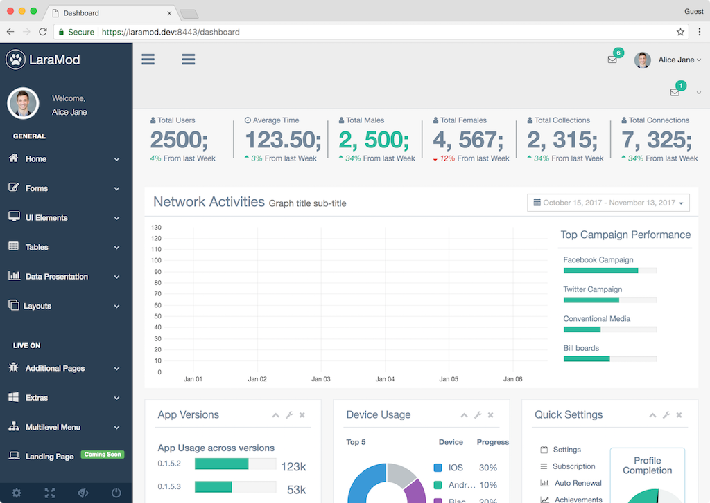

Gentelella is a very nice and gently-looking Bootstrap based admin theme developed by Aigars Silkalns (aka puikinsh). It can be integrated into several Web application frameworks.
This post is one of my development exercises in which Gentelella is used to decorate a Laravel 5 based Web application. This task is part of building my PHP based framework LaraMod.
Laravel can act as backend for any Web application. At the moment of this writing, Laravel includes several good supports for popular front-ends such as Bootstrap, Vue.js, and React. The included tool Laravel Mix, which runs on top of Webpack, can significantly lessen development effort on compiling and mixing Web resources. Thus, I have just leveraged Laravel Mix for this integration task. Further details on Laravel Mix can be found here.
Installation
Laravel provides built-in support for some front-end frameworks but they might cause some conflicts and incompability with Gentelella’s own libraries. Therefore, I have decided to start from scratch, i.e. using basic Laravel without any front-end scaffolding
# remove all scaffolding
php artisan preset none
This command will remove all relevant scaffolding components including Bootstrap, Vue or React. Note that Laravel configuration for Bootstrap and Vue might still exist. For instance, check resource/assets/js/app.js for the following line and make sure it is commented out.
// require('./bootstrap');
Now we just add Gentelella’s dependencies.
# adding Gentelella
yarn add --save gentelella # or npm install gentelella --save
# update dependencies
yarn install # or npm install
After this step, Gentelella should be available in the local node_modules folder.
Compiling and Mixing Resources
The main configuration file of Laravel Mix is webpack.mix.js. The fundamental tasks are defined as following.
let mix = require('laravel-mix');
...
mix.js('resources/assets/js/app.js', 'public/js')
.sass('resources/assets/sass/app.scss', 'public/css');
That is, Mix will compile JavaScript and SASS resources in resources/assets/js/app.js and resources/assets/sass/app.scss to public/js and public/css, respectively.
We shall use the same way to compile necessary Gentelella resources. The full configuration can be found in the LaraMod project webpack.mix.js.
Some common variables are defined to reduce duplicates.
// general resources
let public_js = 'public/js/';
let public_css = 'public/css/';
let resource_sass = 'resources/assets/sass/';
// Gentelella resources
let gentelella_home = 'node_modules/gentelella/';
let gentelella_vendor = gentelella_home + '/vendors/';
As using separate styles for different pages, e.g. Login, Dashboard, etc., I configure Mix to compile them accordingly.
mix.js('resources/assets/js/app.js', public_js).
sass(resource_sass + 'app.scss', public_css).
sass(resource_sass + 'home.scss', public_css).
options({processCssUrls: false}).
sass(resource_sass + 'login.scss', public_css).
options({processCssUrls: false}).
sass(resource_sass + 'dashboard.scss', public_css).
options({processCssUrls: false});
For each component of Gentelella that we need for our project or certain pages, we can copy them into Laravel public folders.
/*
* Copy dependent JavaScripts and CSSs
*/
mix.
// gentelella
copy(gentelella_home + 'build/css/custom.css',
public_css + 'gentelella-custom.css').
copy(gentelella_home + 'build/js/custom.js',
public_js + 'gentelella-custom.js').
...
We can definitely use Mix/Webpack tools for optimising/minimising/transforming Gentelella resources. I will leave it as extra deployment exercises. For now, I will mainly concentrate on development aspects. When I need to use a Gentelella’s component for a certain page, I will include the following directives in the corresponding Laravel Blade templates for that page.
<!-- Styles -->
<link href="{{ asset('css/font-awesome.css') }}" rel="stylesheet">
<link href="{{ asset('css/bootstrap.css') }}" rel="stylesheet">
<link href="{{ asset('css/gentelella-custom.css') }}" rel="stylesheet">
...
<!-- Scripts -->
<script src="{{ asset('js/jquery.min.js') }}"></script>
<script src="{{ asset('js/bootstrap.js') }}"></script>
<script src="{{ asset('js/gentelella-custom.js') }}"></script>
<script src="{{ asset('js/app.js') }}"></script>
Note that the specific Laravel Blade directive {{ }} and asset(...) are used to refer to the resources inside Laravel public/ folder accordingly. A working example of Laravel and Gentelella integration is illustrated via the LaraMod project that you can check out and have a deeper look.


Conclusion
Integration Laravel 5 and Gentelella is a simple but interesting exercise showing many nice features of Laravel for supporting common front-ends. Laravel Mix provides a good wrapper on top of Webpack that really reduces the complexity of Webpack and lessens considerable amount of development effort.